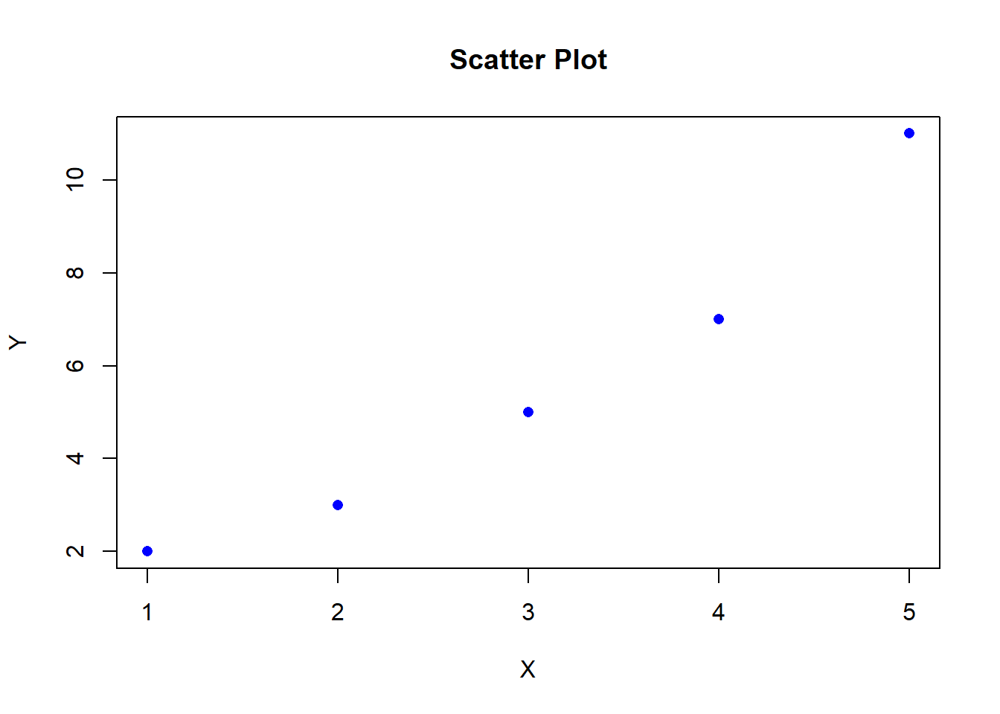
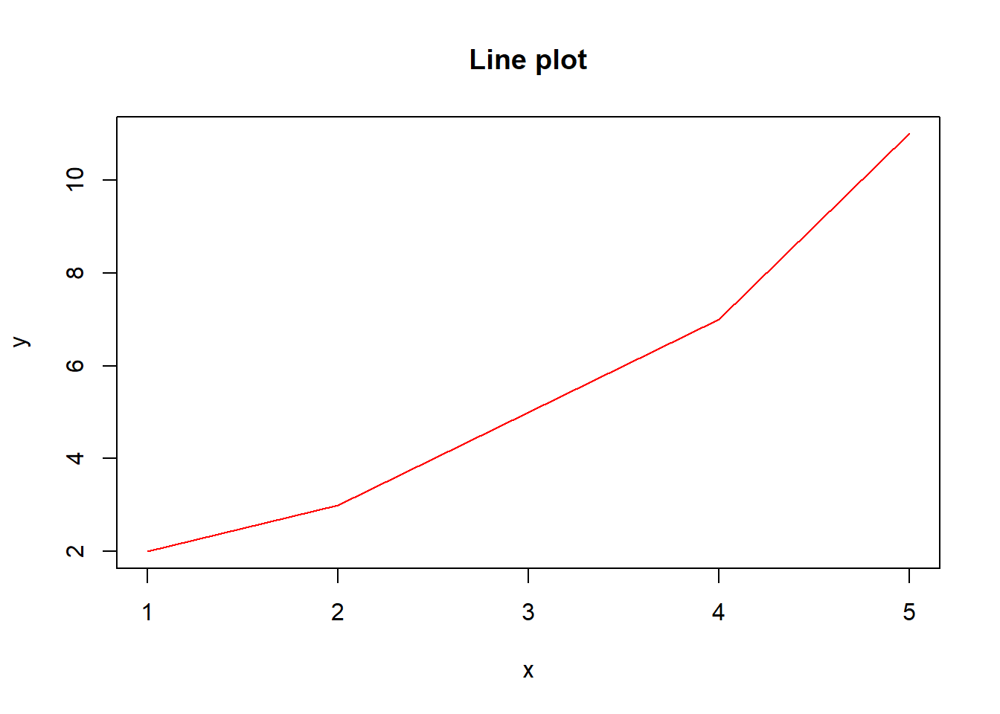
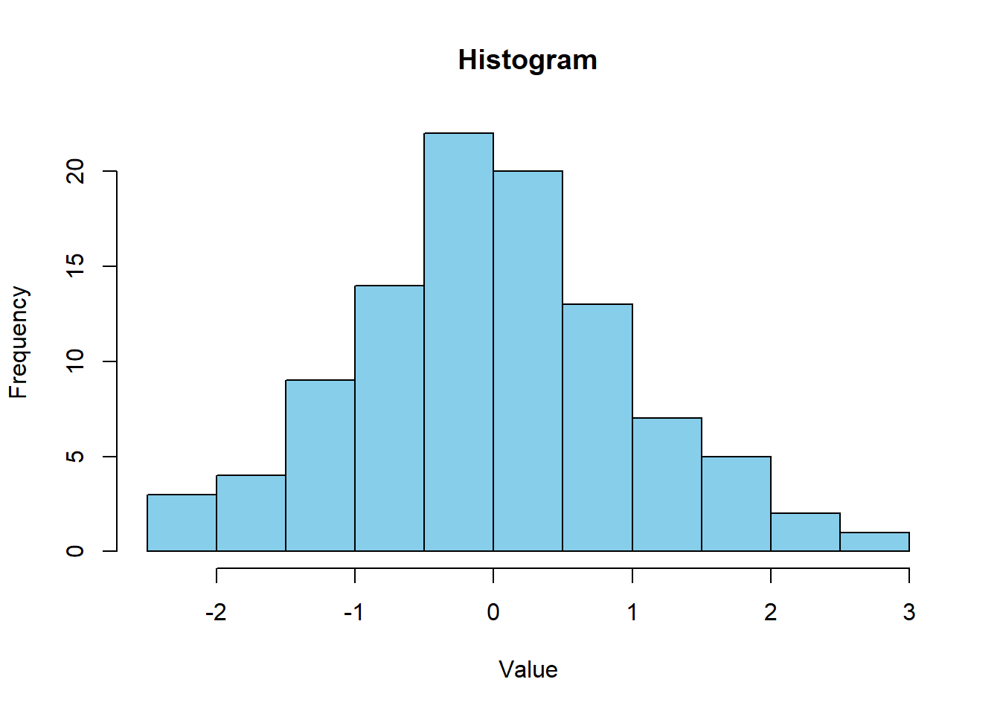
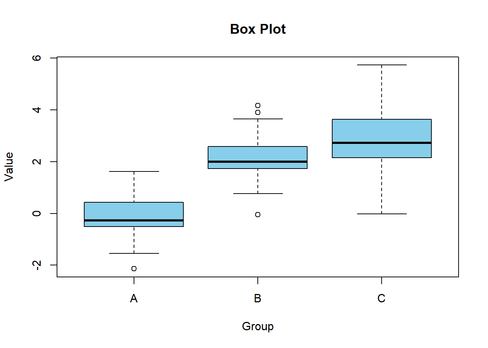
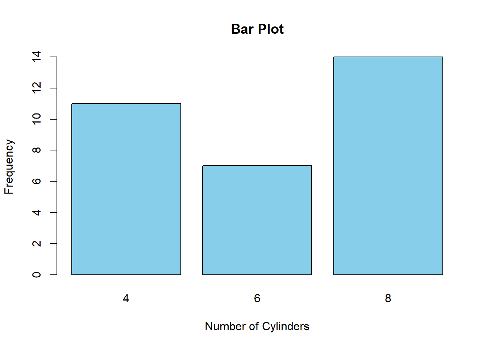
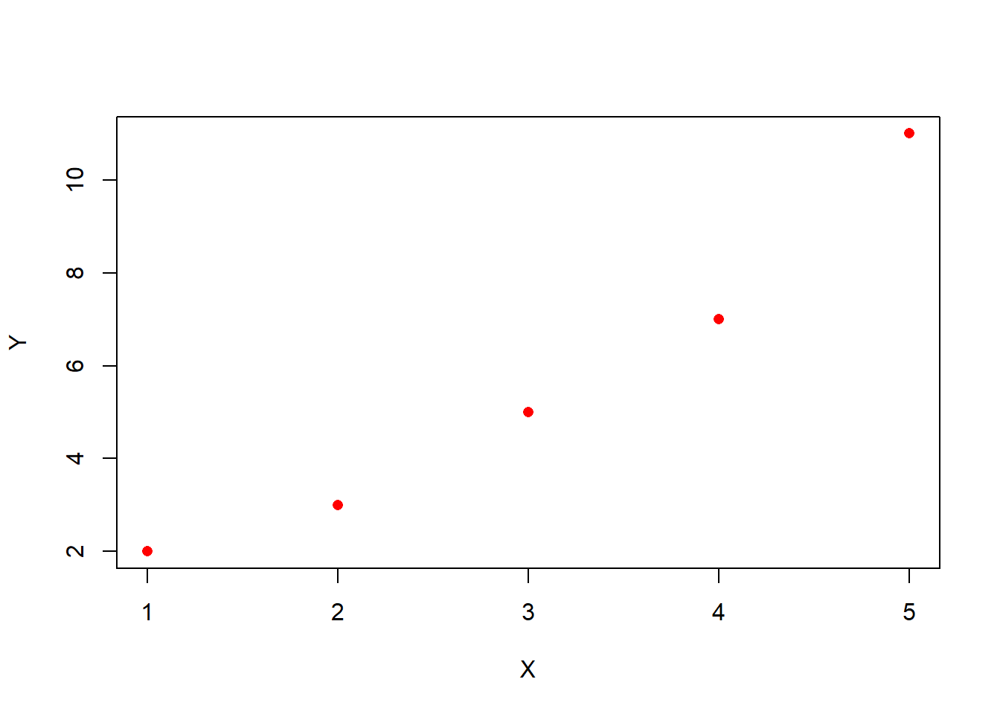
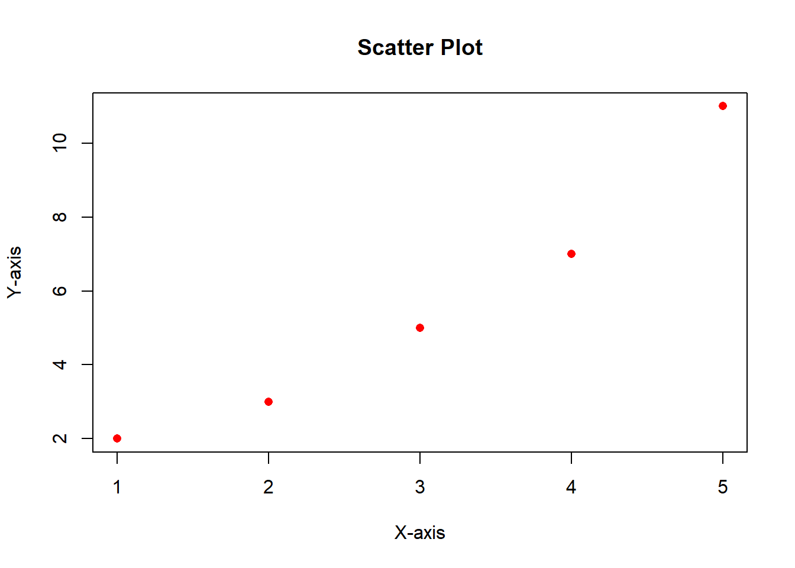

Chapter 2 R BASE GRAPHICS - STARTING WITH THE BASICS
2.1 Exploring Base Graphics in R
Overview of the philosophy behind R’s base graphics system, including its stateful nature
Stateful Nature
R’s base graphics system is stateful, meaning that plots are built up incrementally. You start with an empty plot and add elements to it one by one. This is in contrast to systems like ggplot2, which use a declarative approach where you specify the plot all at once. Stateful nature means that every new plotting command modifies the existing plot or creates a new one if none exists. This allows for a high degree of flexibility but can sometimes lead to complex and intuitive behavior.
R’s base graphics system provides a set of low-level graphics primitives for creating plots. These primitives include functions for drawing points, lines, polygons, text, and more. By combining these primitives, you can create a wide variety of plots, from simple scatter plots to complex multi-panel layouts.
Philosophy
The philosophy behind R’s base graphics system is to provide a flexible and powerful tool for creating a wide range of plots. The emphasis is on simplicity and ease of use, making it easy for users to quickly create informative visualizations.
However, despite that base graphics are powerful, they do have some limitations compared to more modern plotting systems like ggplot2. For instance, they lack some of the advanced features of ggplot2, such as automatic faceting and easy customization of plot themes.
Introduction to Core Plotting Functions in R
R provides a variety of core plotting functions that are useful for creating basic visualizations. In this section, we will explore some of the most commonly used plotting functions. The commonly used core plotting functions are plot(), hist(), boxplot() and barplot().
- The plot() function is used to create scatter plots, line plots, and other types of plots. It is a versatile function that can be used to visualize relationships between two or more variables.
- The hist() function is used to create histograms, which are used to visualize the distribution of a single numeric variable. Note that the optional argument breaks chooses (approximately) how many bins the histogram should have, and col alters the colour of the bars.
- The boxplot() function is used to create box plots, which are used to visualize the distribution of a numeric variable, optionally broken down by a categorical variable.
- The barplot() function is used to create bar plots, which are used to visualize the distribution of a categorical variable.
2.2 Creating Basic Plots
Detailed instructions on using plot() for scatter plots and line graphs
In order to get the full documentation of the plot() function, run ?plot in R. The syntax for the function is given below.
# plot(x, y = NULL, type = "p", xlim = NULL, ylim = NULL,
# log = "", main = NULL, sub = NULL, xlab = NULL, ylab = NULL,
# ann = par("ann"), axes = TRUE, frame.plot = axes,
# panel.first = NULL, panel.last = NULL, asp = NA,
# xgap.axis = NA, ygap.axis = NA,
# ...)Arguments
- \(x, y\): the \(x\) and \(y\) arguments provide the x and y coordinates for the plot.
- \(type\): 1-character string giving the type of plot desired.”p” for points, “l” for lines “b” for both points and lines, “c” for empty points joined by lines, “o” for overplotted points and lines, “s” and “S” for stair steps and “h” for histogram-like vertical lines. Finally, “n” does not produce any points or lines.
- \(xlim,\quad ylim\): the x and y limits respectively.
- \(log\): a character string which contains “x” if the x axis is to be logarithmic, “y” if the y axis is to be logarithmic and “xy” or “yx” if both axes are to be logarithmic.
- \(main\) : a main title for the plot.
- \(sub\): a subtitle for the plot.
- \(xlab,\quad ylab\) : The labels for x-axis and y-axis respectively, defaults to a description of x and y.
The commonly used graphical parameters are:
\(col\) : The colors for lines and points. Multiple colors can be specified so that each point can be given its own color. If there are fewer colors than points they are recycled in the standard fashion. Lines will all be plotted in the first colour specified.
\(bg\) : a vector of background colors for open plot symbols
\(pch\): a vector of plotting characters or symbols
\(cex\) : a numerical vector giving the amount by which plotting characters and symbols should be scaled relative to the default.
\(lty\): a vector of line types
\(lwd\): a vector of line widths
Example:
# Create a scatter plot
x <- c(1, 2, 3, 4, 5)
y <- c(2, 3, 5, 7, 11)
plot(x, y, type = "p", col = "blue", pch = 16, main = "Scatter Plot", xlab = "X", ylab = "Y")
# Create a line plot
plot(x, y, type = "l", col = "red", lwd = 1, main = "Line plot", xlab = NULL, ylab = NULL)
Using hist() to create histograms for data distribution analysis
Histograms are useful for visualizing the frequency distribution of a single variable. Similarly, you can get more documentation of the hist() function by running the command ?hist in R. The generic function hist computes a histogram of the given data values.The default behavior for a histogram is to display frequencies on the vertical axis; probability densities can be displayed using the freq=FALSE option. The default title is given by paste(“Histogram of” , x) where x is the name of the variable being plotted; this can be changed with the main option. The common syntax for the function is given below
#hist(x, breaks = "Sturges",
# freq = NULL, probability = !freq,
# include.lowest = TRUE, right = TRUE, fuzz = 1e-7,
# density = NULL, angle = 45, col = "lightgray", border = NULL,
# main = paste("Histogram of" , xname),
# xlim = range(breaks), ylim = NULL,
# xlab = xname, ylab,
# axes = TRUE, plot = TRUE, labels = FALSE,
# nclass = NULL, warn.unused = TRUE, ...)# Create a histogram
set.seed(100) # Fix the random numbers generated
data <- rnorm(100) # Generate some random data
hist(data, breaks = "Sturges", col = "skyblue", main = "Histogram", xlab = "Value", ylab = "Frequency")
Implementing boxplot() and barplot() to visualize data comparisons and distributions
The boxplot() and barplot() functions in R are commonly used for visualizing data comparisons and distributions.
1. boxplot()
The common syntax of the function is given below.
Example
# Create a box plot
data <- data.frame(
Group = rep(c("A", "B", "C"), each = 50),
Value = c(rnorm(50), rnorm(50, mean = 2), rnorm(50, mean = 3))
)
boxplot(Value ~ Group, data = data, col = "skyblue", main = "Box Plot", xlab = "Group", ylab = "Value")
2.barplot() The syntax used for barplot() function is given below.
Example
2.3 Customizing Plots
Basic customization options including colors, main titles, axis labels, and plot dimensions
1. Changing Colors
# Create a scatter plot with custom colors
x <- c(1, 2, 3, 4, 5)
y <- c(2, 3, 5, 7, 11)
plot(x, y, type = "p", col = "red", pch = 16, main = "", xlab = "X", ylab = "Y")
2. Adding Titles and Axis Labels
# Create a scatter plot with titles and axis labels
x <- c(1, 2, 3, 4, 5)
y <- c(2, 3, 5, 7, 11)
plot(x, y, type = "p", col = "red", pch = 16, main = "Scatter Plot", xlab = "X-axis", ylab = "Y-axis")
3. Changing Plot Dimensions
# Create a scatter plot with custom dimensions
x <- c(1, 2, 3, 4, 5)
y <- c(2, 3, 5, 7, 11)
plot(x, y, type = "p", col = "red", pch = 16, main = "Scatter Plot", xlab = "X", ylab = "Y", xlim = c(0, 6), ylim = c(0, 12))
4. Combining Customization Options
# Create a scatter plot with custom colors, titles, axis labels, and dimensions
x <- c(1, 2, 3, 4, 5)
y <- c(2, 3, 5, 7, 11)
plot(x, y, type = "p", col = "red", pch = 16, main = "Scatter Plot", xlab = "X-axis", ylab = "Y-axis", xlim = c(0, 6), ylim = c(0, 12))
You can further customize your plots by adjusting parameters such as pch (for points), lwd (for lines), lty (for line type), cex (for point size), and more.
Tips on enhancing plot readability and aesthetic appeal
In order to have a plot with enhanced readability and have an aesthetic appeal, you need to use some of these tips:
- Choose appropriate colors: Use colors that complement each other and make it easy to distinguish different elements of the plot.Avoid using colors that are too bright or too similar to each other.
- Use appropriate font sizes and styles: Use larger font sizes for titles and axis labels to make them more prominent.
- Add grid lines: Adding grid lines can make it easier to read the plot and interpret the data.
- Use appropriate plot types: Choose the appropriate plot type for your data. For example, use a scatter plot for continuous data and a bar plot for categorical data.
- Use consistent and intuitive labeling: Make sure that the labels on your plot are consistent and intuitive, making it easy for readers to understand the information presented.
- Use legends for clarity: Use legends to explain the meaning of different colors or symbols used in the plot.
You can also add more improvements to your plot to make it look more nice and appealing.
2.4 Practical Examples: Exercises
Exercise 6
Create a dataframe of marks of 1000 students (male and female) with their respective status i.e pass if marks >= 40, fail otherwise (set a seed to 100). Additionally, let the student marks be graded using factor method in the following format:
A: 70 marks and above
B: 60-69
C: 50-59
D: 40-49
E: Below 40 marks
Create a dataframe called students with the vectors; id, gender, marks, grade and status where status is a column which shows whether the student passed or failed.You will use this dataframe to answer exercise 7,8 and 9.
Exercise 7
Plot a box plot to show the distribution of marks by gender.Give it a title, ‘Distribution of Student Marks’. The x-axis should be labelled as ‘Gender’ while the y-axis should be labelled as ‘Marks’. Apply blue color to male and green color to female. Set cex.main and cex.lab to 1.2.
Exercise 8
Plot a histogram of the marks where the bins should be equivalent to the classes of grading. Which grade had the highest number of students? How were the marks distributed in the class? Fill the histogram with red. Add a customized title and label the axes.
Exercise 9
Use a well customized barpot to show the mean mark of students by gender. Which gender had the highest average score?